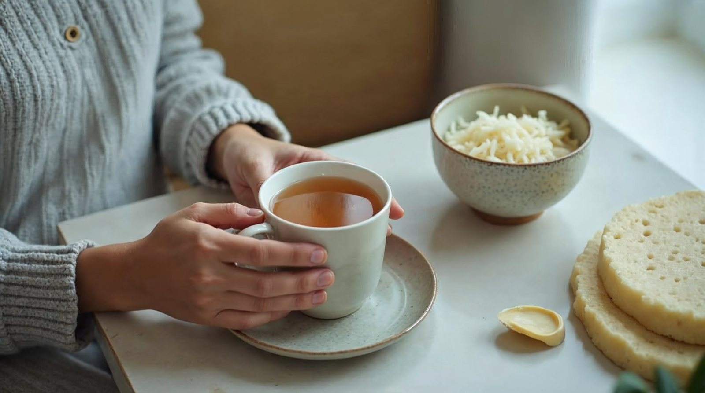

이종호 한의사 감수좋은꿈참사랑한의원 대표원장 (한의사 면허번호 19769)발행 2026-11-24 · 수정 2026-11-26
이 글의 차례
- 왜 주말 진료에도 평일 기록이 중요할까요
- 주말에만 오시면 무엇이 달라질까요?
- 주말에 몰아서 쉬면 왜 월요일이 더 무거울까요?
- 어떤 불편을 주말 진료로 이어 가는 경우가 많을까요?
- 먼저 이렇게 여쭙니다
- 일상에서 먼저 해 볼 수 있는 것
- 상황별 예시
- 평일 일주일은 이렇게 보내 보세요
- 스스로 점검해 보세요
- 평일 기록은 어떤 모양이면 좋을까요?
- 주말 진료를 한 번 놓쳤다면 어떻게 하나요?
- 가족과 함께 오는 주말이라면
- 한의원에서 함께 살필 수 있는 경우
- 왜 평일의 짧은 움직임이 중요할까요
- 방문 간격은 어떻게 정하나요?
- 첫 주말 진료는 어떻게 흘러가나요?
- 주말 진료일에는 무엇을 챙겨 오면 좋을까요?
- 오전과 오후, 언제 오시면 좋을까요?
- 공휴일이 끼는 주는 어떻게 하나요?
- 주말 진료 뒤 남은 하루는 어떻게 보낼까요?
- 얼마나 지켜보고 언제 상담할까요?
- 이렇게 기록해 오시면 상담이 쉬워집니다
- 이런 증상은 먼저 확인이 필요합니다
주말에만 오셔도 진료를 이어 갈 수 있습니다. 평일엔 퇴근이 늦어 주말밖에 시간이 없다는 말씀을 상도동과 노량진에서 일하거나 공부하는 분들께 자주 듣습니다. 다만 방문과 방문 사이가 일주일 가까이 벌어지기 때문에, 그 사이를 어떻게 보내셨는지가 다음 진료의 중요한 실마리가 됩니다.
저도 주말 진료실에서 일주일에 한 번밖에 못 오는데 의미가 있느냐는 질문을 자주 받습니다. 그럴 때마다 방문 횟수만큼이나 방문 사이의 일주일을 어떻게 보내느냐가 중요하다고 말씀드립니다.
이 글에서는 주말에만 오시는 분이 진료를 끊기지 않게 이어 가는 방법을 차근차근 정리했습니다.
왜 주말 진료에도 평일 기록이 중요할까요
주말에만 다니면 진료가 자꾸 처음으로 돌아가는 것 같은 느낌이 들 때가 있습니다.
- 방문 간격이 길어 평일에 있었던 변화가 기억에서 흐려지기 쉽습니다.
- 평일에도 같은 자세와 업무가 반복되어, 주말에 덜어 낸 부담이 다시 쌓이는 경우가 있습니다.
- 평일 저녁의 피로와 잠 부족이 주말 컨디션에 그대로 이어지기도 합니다.
- 주말 진료는 점심시간 없이 오후 3시에 끝나 늦잠을 자면 시간이 빠듯해질 수 있습니다.
주말에만 오시면 무엇이 달라질까요?
평일 저녁에 자주 오시는 분과 비교하면, 주말에만 오시는 분은 한 번의 진료에서 살펴야 할 시간의 폭이 넓습니다. 지난 진료 뒤 하루 이틀은 편했다가 수요일쯤 다시 뻐근해졌는지, 일주일 내내 비슷했는지에 따라 다음 방법이 달라집니다.
그래서 저는 주말에 오시는 분께 언제가 가장 불편하셨는지보다 요일마다 어떠셨는지를 여쭙는 편입니다. 월요일 출근 뒤, 야근한 날, 운동한 날처럼 요일과 일을 짝지어 떠올리시면 기억이 훨씬 또렷해집니다.
또 주말에는 늦게 일어나고 몰아서 쉬는 경우가 많아, 진료 당일의 몸 상태가 평일과 다를 수 있습니다. 주말 아침에는 괜찮은데 평일 오후에만 불편하다면, 그 차이 자체가 원인을 찾는 단서가 됩니다.
주말에 몰아서 쉬면 왜 월요일이 더 무거울까요?
평일에 잠이 모자라면 주말에 오래 자서 채우고 싶어집니다. 그런데 토요일과 일요일에 늦게 일어나면 일요일 밤 잠들기가 어려워지고, 월요일 아침이 더 힘들어지는 경우가 있습니다.
진료를 받으러 오시는 주말에는 평일보다 한두 시간 정도만 늦게 일어나도록 맞춰 보세요. 일어나는 시각이 크게 흔들리지 않으면 평일 컨디션이 덜 출렁이고, 진료 뒤 몸의 변화를 읽기도 쉬워집니다.
어떤 불편을 주말 진료로 이어 가는 경우가 많을까요?
주말에 오시는 분들의 불편은 평일 생활에서 쌓인 것이 많습니다. 오래 앉아 생긴 목·어깨·허리 뻐근함, 늦은 식사와 야식으로 흔들린 소화, 늦게 자고 일찍 일어나는 생활에서 오는 잠 문제가 대표적입니다.
이런 불편은 하루아침에 생긴 것이 아니어서, 한 번의 진료보다 몇 주에 걸쳐 생활과 함께 살피는 편이 맞는 경우가 많습니다.
먼저 이렇게 여쭙니다
- 평일에는 저녁 8시 전에도 오기 어려우신가요?
- 토요일과 일요일 중 어느 쪽이 더 편하신가요?
- 불편한 곳이 생긴 지 얼마나 되었나요?
- 평일에 집이나 회사에서 따로 낼 수 있는 시간이 하루 몇 분쯤 되나요?

일상에서 먼저 해 볼 수 있는 것
- 처음 오시는 날은 시간 여유가 있는 주말 오전으로 예약하기
- 평일 저녁마다 그날 가장 불편했던 순간을 한 줄로 메모하기
- 진료를 마치고 나갈 때 다음 주말 예약을 미리 잡아 두기
- 가끔 평일 저녁(8시까지)에 시간이 나면 그 주는 평일 방문과 섞기
상황별 예시
- 예를 들어 평일에는 노량진 학원에서 밤늦게까지 공부하는 수험생이라면, 일요일 오전 진료가 한 주의 쉼표가 되기도 합니다. 자습실에 앉아 있던 시간과 잠든 시각을 일주일치 적어 오시면 앉는 자세와 잠의 흐름을 함께 살필 수 있습니다.
- 예를 들어 주중에 출장이 잦은 직장인이라면, 차 안이나 기차에서 보낸 시간이 길어 허리와 목이 굳기 쉽습니다. 출장 날짜와 이동 시간을 달력에 표시해 오시면 불편이 커진 요일과 맞춰 볼 수 있습니다.
- 예를 들어 평일에 아이를 돌보느라 시간을 내기 어려운 부모라면, 배우자가 쉬는 토요일에 오시는 경우가 많습니다. 아이를 오래 안거나 업은 날을 표시해 오시면 손목과 허리 부담을 함께 살필 수 있습니다.
- 예를 들어 교대 근무로 쉬는 날이 매주 바뀌는 분이라면, 근무표 사진을 보여 주시면 다음 방문을 평일과 주말 가운데 언제로 잡을지 함께 정할 수 있습니다.
평일 일주일은 이렇게 보내 보세요
- 월요일: 지난 주말 진료 뒤 이틀 동안 어땠는지 한 줄로 적기
- 화~목요일: 한 시간 앉아 있었다면 일어나 2~3분 걷고, 진료 때 정한 동작을 하루 한 번 천천히 해 보기
- 금요일: 한 주 가운데 가장 불편했던 날과 그 까닭을 떠올려 메모 정리하기
- 진료 전날 밤: 너무 늦게까지 깨어 있지 않고, 예약 시간에 맞춰 여유 있게 일어나기
스스로 점검해 보세요
- 평일 저녁 8시 전에 들를 수 있는 날이 한 주에 하루라도 있는지 확인했다
- 토요일과 일요일 가운데 더 여유 있는 날을 정했다
- 지난 일주일 가운데 가장 불편했던 날을 떠올릴 수 있다
- 불편이 출근하는 날과 쉬는 날에 따라 달라지는지 알고 있다
- 복용 중인 약과 영양제 이름을 적어 두었다
- 다음 방문 전까지 집에서 해 볼 일을 하나 정해 두었다
해당하지 않는 항목이 있어도 괜찮습니다. 진료실에서 함께 채워 가면 됩니다.
점검하다 보면 "평일에 생각보다 오래 앉아 있구나", "금요일마다 더 불편하구나"처럼 스스로 알게 되는 것도 있습니다. 그런 발견을 진료 때 말씀해 주시면 다음 한 주의 계획을 세우는 데 큰 도움이 됩니다.
평일 기록은 어떤 모양이면 좋을까요?
기록은 잘 쓰는 것보다 꾸준히 남기는 것이 중요합니다. 저는 하루 한 줄, 다섯 가지만 권합니다. 요일, 불편 점수(0~10점), 가장 불편했던 순간, 잠든 시각, 그날 특별했던 일입니다.
- 예: 월 4점 / 오후 회의 끝나고 목 / 0시 30분 / 야근 없음
- 예: 수 7점 / 퇴근길 지하철 서 있을 때 허리 / 1시 / 회식
- 예: 금 3점 / 별일 없음 / 23시 30분 / 운동 30분
이렇게 일주일이 모이면 어떤 날 점수가 오르는지 한눈에 보입니다. 회식한 다음 날이나 오래 서 있던 날처럼 반복되는 흐름이 보이면, 그 부분부터 함께 바꿔 볼 수 있습니다.
주말 진료를 한 번 놓쳤다면 어떻게 하나요?
일이 생겨 한 주를 건너뛰는 일은 흔합니다. 그럴 때도 기록은 이어 가 주세요. 두 주 치 기록을 들고 오시면 건너뛴 사이의 흐름까지 함께 살필 수 있습니다.
예약을 바꿔야 한다면 미리 전화로 알려 주시면 다른 시간을 잡는 데 도움이 됩니다. 건너뛴 주에 불편이 커졌다면 다음 진료 때 그 내용을 가장 먼저 말씀해 주세요.
가족과 함께 오는 주말이라면
주말에는 배우자나 아이, 부모님과 함께 오시는 분도 있습니다. 함께 오시는 분도 진료를 원하시면 방문 전 전화로 미리 말씀해 주세요.
어르신을 모시고 오신다면 드시는 약 봉투를 함께 챙겨 오시고, 평소 집에서 어떻게 지내시는지 곁에서 덧붙여 주셔도 큰 도움이 됩니다.
한의원에서 함께 살필 수 있는 경우
- 방문 간격이 일주일 이상인 경우, 그 사이 생활에서 해 볼 것을 진료실에서 함께 정합니다.
- 평일 기록을 보며 어떤 날, 어떤 동작에서 불편했는지 지난번 이야기부터 이어서 여쭙니다.
- 치료 방법과 간격은 상태를 보며 조정하고, 필요하면 다른 의료기관 진료를 안내합니다.
좋은꿈참사랑한의원에서는 모든 분께 맥부터 짚으며 지난 일주일의 이야기를 여쭙고, 필요하면 혀(설진)나 초음파로 더 살핍니다. 그 뒤 침·약침·추나·한약 상담 등 상태에 맞는 방법을 정하고, 귀가 전에는 다음 주말까지 집에서 해 볼 일과 지켜볼 점을 알려 드립니다.
왜 평일의 짧은 움직임이 중요할까요
주말에 한 번 진료를 받고 나머지 엿새를 예전처럼 보내면, 덜어 낸 부담이 금세 다시 쌓이기 쉽습니다. 그래서 평일에 하루 몇 분이라도 이어 가는 움직임이 주말 진료와 짝을 이룹니다.
거창한 운동이 아니어도 괜찮습니다. 점심 뒤 10분 걷기, 한 시간마다 일어나 어깨 돌리기, 자기 전 다리 뒤쪽 늘이기처럼 생활 속에 끼워 넣을 수 있는 것부터 시작합니다. 무엇을 할지는 진찰 뒤 지금 상태에 맞게 한두 가지만 골라 드립니다.
방문 간격은 어떻게 정하나요?
방문 간격은 처음부터 정해 두기보다 불편의 정도와 생활을 보며 함께 정합니다. 주말에만 오실 수 있다면 그 안에서 맞출 방법을 먼저 찾고, 필요하면 가끔 평일 저녁을 섞는 방법도 말씀드립니다.
몇 주 지내 보며 기록을 함께 보고, 간격을 늘릴지 그대로 둘지 다시 이야기합니다. 일정이 바뀌면 언제든 편하게 말씀해 주세요.
첫 주말 진료는 어떻게 흘러가나요?
처음 오시는 날은 접수 때 기본 정보를 적으시고, 진료실에서는 모든 분의 맥을 먼저 짚고 불편한 곳과 함께 평일 하루의 흐름을 여쭙습니다. 몇 시에 일어나 몇 시간 앉아 있는지, 퇴근은 몇 시인지, 주말에는 어떻게 쉬는지를 들으면 불편이 어디서 쌓이는지 짐작하기 쉬워집니다.
진찰을 마치면 오늘 할 방법과 그 이유를 먼저 설명드린 뒤 진행합니다. 마치고 나서는 같은 동작을 다시 해 보며 달라진 점을 함께 확인합니다.
주말 진료일에는 무엇을 챙겨 오면 좋을까요?
- 한 주 동안 적은 메모(휴대폰 화면 그대로도 괜찮습니다)
- 새로 먹기 시작한 약이나 영양제가 있다면 이름이나 사진
- 목이나 허리를 살피기 편한 넉넉한 옷
- 다음 주 일정(출장, 회식, 야근 예정)을 알 수 있는 달력
다음 주 일정을 미리 알면 그 주에 맞게 집에서 해 볼 일과 다음 방문 날짜를 정하기 쉽습니다.
오전과 오후, 언제 오시면 좋을까요?
처음 오시는 날은 진찰과 상담에 시간이 더 걸릴 수 있어 오전 시간을 권합니다. 다시 오시는 날은 늦잠을 자지 않고 평소에 가까운 시각에 일어나 오시면, 평일 몸 상태와 크게 다르지 않은 상태에서 살필 수 있습니다.
주말 오후에는 진료가 3시에 끝나니, 오후에 오신다면 끝나는 시각을 감안해 여유 있게 예약해 주세요. 마지막 접수 시각은 방문 전 전화로 확인해 주세요.
공휴일이 끼는 주는 어떻게 하나요?
토·일·공휴일은 같은 시간(오전 9시 30분~오후 3시, 점심시간 없음)에 진료하니, 공휴일이 낀 주에는 그날 오셔도 됩니다. 다만 명절 휴진 여부는 미리 전화로 확인해 주세요.
주말 진료 뒤 남은 하루는 어떻게 보낼까요?
진료를 받은 날은 무리한 운동이나 오랜 시간 운전, 늦은 술자리를 되도록 피해 주세요. 가볍게 걷고, 저녁에는 따뜻한 물로 씻은 뒤 평소보다 조금 일찍 잠자리에 드시면 좋습니다.
그날 저녁과 다음 날 아침의 몸 상태를 한 줄씩 적어 두시면, 다음 주말 진료에서 그 기록부터 이어서 볼 수 있습니다.
얼마나 지켜보고 언제 상담할까요?
- 주말 진료 뒤 하루 이틀 몸이 무겁거나 뻐근한 느낌은 지켜보셔도 되는 경우가 많습니다. 그 느낌이 며칠 가는지 적어 두세요.
- 평일 중간에 불편이 커져 다음 주말까지 기다리기 어렵다면, 평일 진료 시간(09:30~20:00, 점심 13:00~14:00)에 한 번 들르셔도 됩니다.
이렇게 기록해 오시면 상담이 쉬워집니다
- 평일 저녁마다 그날의 불편 정도(0~10점)와 가장 불편했던 동작
- 잠든 시각과 일어난 시각
- 지난 진료 뒤 집에서 해 본 것과 그 반응
- 새로 먹기 시작한 약이나 영양제
평일을 버텨 내고 주말 한나절을 내어 오시는 일, 쉽지 않습니다. 다음에 오시면 지난 한 주 가운데 어느 요일이 가장 힘드셨는지부터 여쭙겠습니다.
이런 증상은 먼저 확인이 필요합니다
- 주말을 기다리는 사이 통증이 갑자기 심해지거나 저림·힘 빠짐이 새로 생긴 경우
- 열이 나거나 숨이 찬 경우
이런 신호가 있으면 한의원보다 가까운 병원이나 응급실을 먼저 찾으세요.

여쭙는 것
- 평일에는 저녁 8시 전에도 오기 어려우신가요?
- 토요일과 일요일 중 어느 쪽이 더 편하신가요?
- 불편한 곳이 생긴 지 얼마나 되었나요?
생활에서 해 볼 것
- 처음 오시는 날은 시간 여유가 있는 주말 오전으로 예약하기
- 평일 저녁마다 그날 가장 불편했던 순간을 한 줄로 메모하기
- 진료를 마치고 나갈 때 다음 주말 예약을 미리 잡아 두기
한의원에서 함께 살필 것
- 방문 간격이 일주일 이상인 경우, 그 사이 생활에서 해 볼 것을 진료실에서 함께 정…
- 평일 기록을 보며 어떤 날, 어떤 동작에서 불편했는지 지난번 이야기부터 이어서 여쭙…
- 치료 방법과 간격은 상태를 보며 조정하고, 필요하면 다른 의료기관 진료를 안내합니다.
먼저 확인이 필요한 신호
- 주말을 기다리는 사이 통증이 갑자기 심해지거나 저림·힘 빠짐이 새로 생긴 경우
- 열이 나거나 숨이 찬 경우
한눈에 보는 표
| 구분 | 핵심 |
|---|---|
| 여쭙는 것 | 평일에는 저녁 8시 전에도 오기 어려우신가요? 토요일과 일요일 중 어느 쪽이 더 편하신가요? |
| 생활에서 해 볼 것 | 처음 오시는 날은 시간 여유가 있는 주말 오전으로 예약하기 평일 저녁마다 그날 가장 불편했던 순간을 한 줄로 메모하기 |
| 한의원에서 함께 살필 것 | 방문 간격이 일주일 이상인 경우, 그 사이 생활에서 해 볼 것을 진료실에서 함께 정합니다. 평일 기록을 보며 어떤 날, 어떤 동작에서 불편했는지 지난번 이야기부터 이어서 여쭙니다. |
| 먼저 확인이 필요한 신호 | 주말을 기다리는 사이 통증이 갑자기 심해지거나 저림·힘 빠짐이 새로 생긴 경우 열이 나거나 숨이 찬 경우 |
자주 묻는 질문
주말에는 점심시간이 있나요?
점심시간(13:00~14:00)은 평일에만 있고, 토·일·공휴일은 오전 9시 30분부터 오후 3시까지 쉬는 시간 없이 진료합니다. 명절 휴진 여부는 미리 전화로 확인해 주세요.
일주일에 한 번만 와도 괜찮을까요?
상태에 따라 다르므로 진찰 후 함께 정합니다. 방문 간격이 긴 만큼 평일에 해 볼 수 있는 방법을 함께 찾습니다.
주말에는 예약 없이 가도 되나요?
예약 없이 오셔도 되는지와 그날 진료 상황은 방문 전 전화(02-815-7510)로 확인해 주세요. 네이버 예약이나 전화로 미리 시간을 잡아 두실 수도 있습니다.
기록을 깜빡하고 못 했는데 그래도 가도 되나요?
네, 괜찮습니다. 진료실에서 요일별로 떠올려 보며 함께 정리하면 됩니다. 다음 주부터 짧게 적어 보셔도 충분합니다.
좋은꿈참사랑한의원은 재진 때 지난번 이야기부터 이어서 여쭙니다. 진료시간과 예약은 오시는 길에서 확인하세요.
어디서 상담받을 수 있나요?
좋은꿈참사랑한의원은 서울 동작구 만양로2길 2 신성빌딩 3층·5층(서울 동작구 상도동, 7호선 상도역 3번 출구 근처)에 있습니다. 한의사 3명(이종호 대표원장, 조영기 수석진료원장, 정원영 진료원장)이 진료합니다. 진료시간은 평일 09:30~20:00(점심 13:00~14:00), 토·일·공휴일 09:30~15:00이며, 방문 전 전화로 확인을 권합니다. 예약은 네이버 예약, 카카오톡 상담, 전화 02-815-7510로 받습니다.
이 글은 일반적인 건강 정보이며 개인의 진단이나 치료를 대신하지 않습니다. 증상이 있거나 복용 중인 약이 있다면 진료를 통해 확인하세요. 치료 효과는 개인마다 다를 수 있습니다.
작성 기준: 일반적으로 알려져 있는 건강 정보를 참고해 정리했습니다(대표원장 감수). 증상 기록은 1~2주 동안 하루 1회, 비슷한 시간에 적어 오시면 지난 상태와 비교하기 쉽습니다.